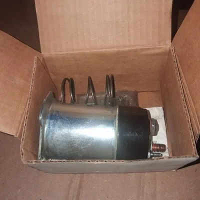
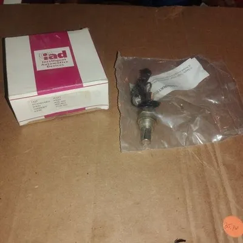
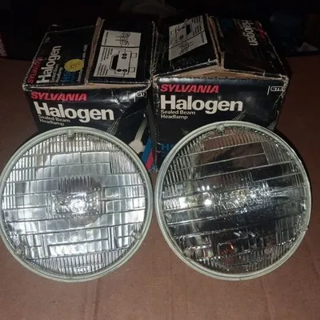

Voltage Regulators
12V Generator Voltage Regulator KW DA-20 55-60 Chevrolet Truck AMC Ambassador
DA-20
Fits 1958-1963 AMC Ambassador · 1958-1960 AMC Rambler (193 listed)
$49.99
View details38 parts in Electrical & Sensors from Standard Motor Products, KEM and IAD and more, each with photos, part numbers and condition on its own page. Open a part to see every vehicle it is listed for.
38 parts
Online checkout through Square. Ships from Carbondale, PA, or pick up by confirmed appointment only. Fitment question? Message us.
DA-20
Fits 1958-1963 AMC Ambassador · 1958-1960 AMC Rambler (193 listed)
$49.99
View details
SW86
Fits 1977-1979 Ford F-150 · 1983-1984 Ford Mustang (2011 listed)
$29.99
View details
VR125T
Fits 1969-1971 Chrysler 300 · 1983-1989 Chrysler Fifth Avenue (2695 listed)
$33.99
View details
Fits 1981-1986 Chevrolet C10 (81 listed)
$49.99
View details
SW95AX
Fits 1985-1990 Dodge D150 · 1985-1990 Dodge D250 (1304 listed)
$24.99
View details
KVR544
Fits 1982-1983 Honda Accord · 1983-1987 Honda Prelude (12 listed)
$55.99
View details
Fits 2000-2005 Buick LeSabre (12 listed)
$40.99
View details
2000
Fits 2000-2005 Buick LeSabre (12 listed)
$39.99
View details
D1595G
Fits 2003-2006 Chevrolet Tahoe · 2007 GMC Sierra (89 listed)
$24.99
View details
SW-64
$34.99
View details
08604
Fits 1965-1976 Ford (2 listed)
$16.99
View details
08606
Fits Ford
$14.99
View details
08607
Fits 1962-1974 GM
$12.99
View details
2000
Fits 2000-2006 Chevrolet Suburban 1500 · 2000-2006 Chevrolet Suburban 2500 (12 listed)
$30.99
View details
K77926
Interchange SW29121
$24.99
View details
E2PZ-10316-A
Fits 1968-1996 Ford Bronco · 1975-1996 Ford F-150 (624 listed)
$33.99
View details
D981
Fits 1975-1986 Chevrolet C10 · 1967-1986 Chevrolet Camaro (1506 listed)
$34.99
View details
MAP5
Fits 1985-1995 Jeep Cherokee (162 listed)
$39.99
View details
MAP6
Fits 1981-1985 Buick Century · 1985-1988 Chevrolet Monte Carlo (367 listed)
$44.99
View details
OX5
Fits 1985 Chevrolet Caprice · 1985-1987 Chevrolet El Camino (55 listed)
$44.99
View details
SW3
Fits 1967-1972 Ford F-100 · 1964-1967 Ford Mustang (420 listed)
$37.99
View details
VR-125
Fits 1970-1974 Dodge Challenger · 1970-1976 Dodge Dart (461 listed)
$24.99
View details
138-101
Fits 1985-1995 GMC C1500 · 1985-1996 Buick Century (1885 listed)
$29.99
View details
145-610
Fits 1991-1993 Chrysler Daytona · 1991-1993 Chrysler Dynasty (749 listed)
$39.99
View details
KVR202B
Fits 1966-1989 Ford Bronco · 1975-1992 Ford F-150 (2855 listed)
$29.99
View details
KVR202BX
Fits 1965-1983 Ford F-100 · 1966-1989 Ford Bronco (3000 listed)
$34.99
View details
AS5
Fits 1982-1997 Chevrolet Camaro · 1996-1997 Acura SLX (706 listed)
$53.99
View details
RX-103
Fits 1972-1979 Chevrolet Camaro · 1970-1974 Chevrolet C10 Pickup (667 listed)
$17.99
View details
SG12
Fits 1986-1991 Acura Integra · 1984-1989 Honda Accord (75 listed)
$24.99
View details
VR166T
Fits 1963-1974 Ford Galaxie 500 · 1978 AMC AMX (236 listed)
$33.99
View details
SG22
Fits 1987-1988 Chrysler LeBaron · 1987-1988 Chrysler New Yorker (91 listed)
$21.99
View details
SG7
Fits 1985-1986 Chrysler LeBaron · 1985-1987 Dodge Caravan (58 listed)
$21.99
View details
SS-582
Fits 1980-1986 Jeep CJ7 · 1980-1987 Jeep Cherokee (372 listed)
$32.99
View details
SS598
Fits 1992-1996 Ford Bronco · 1984-1991 Ford F-150 (679 listed)
$22.99
View details
VR-111
Fits 1973-1987 Buick Century · 1971-1987 Buick LeSabre (873 listed)
$19.99
View details
5001
$27.99
View details
H5001
$59.99
View details
UR125T
Fits 1969-1971 Chrysler 300 · 1983-1989 Chrysler Fifth Avenue (1426 listed)
$32.99
View details